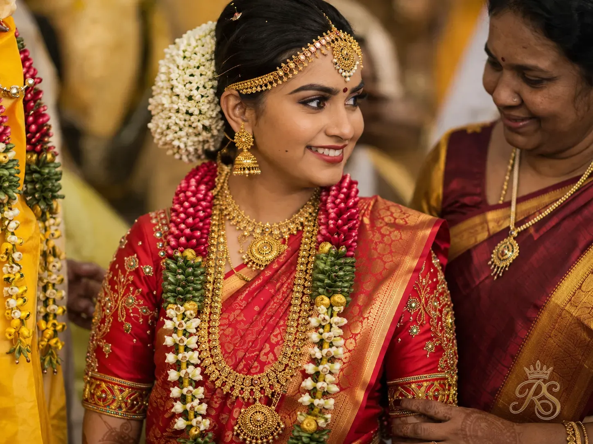
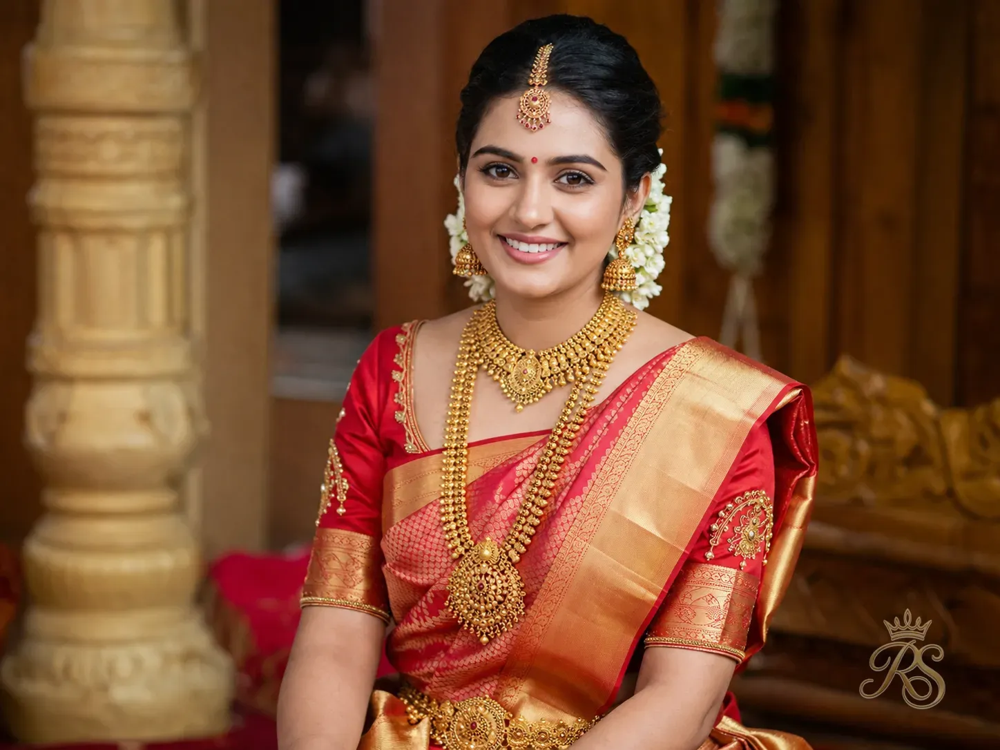
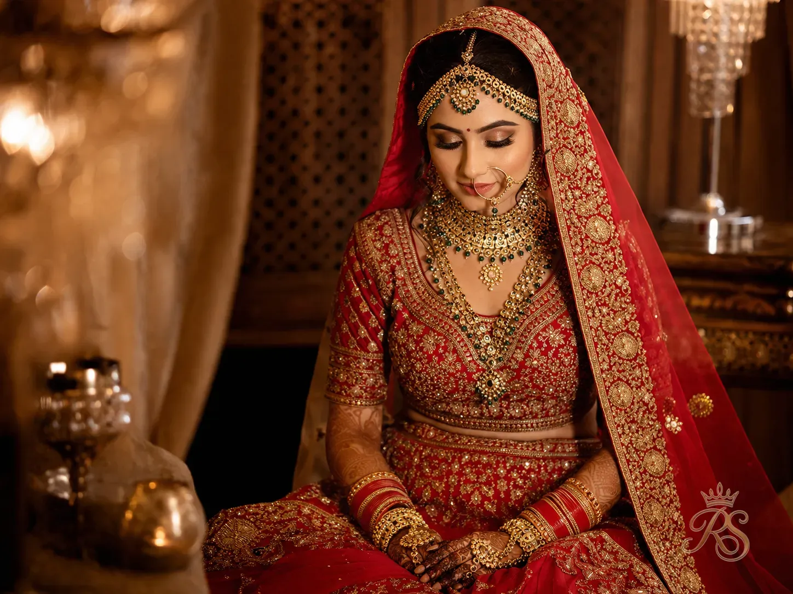
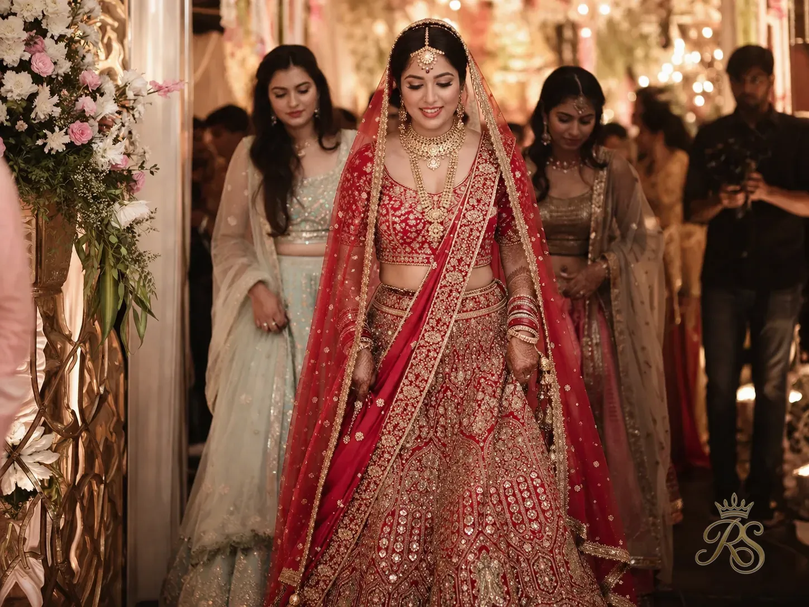
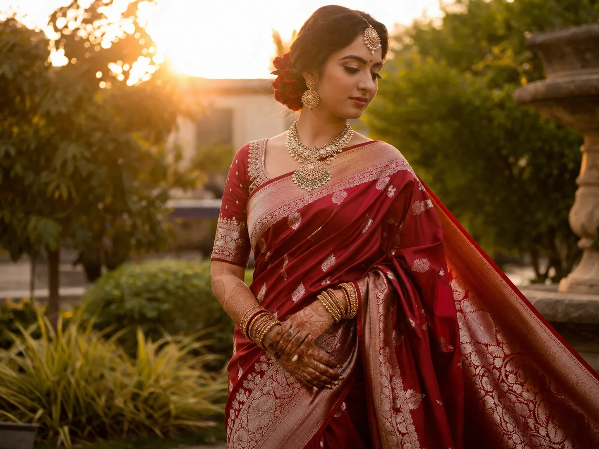
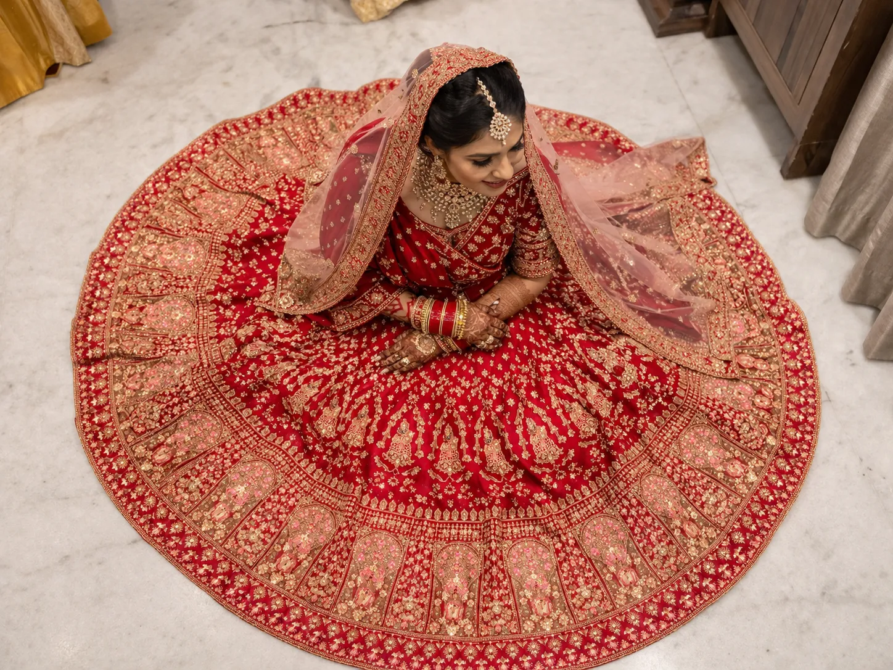
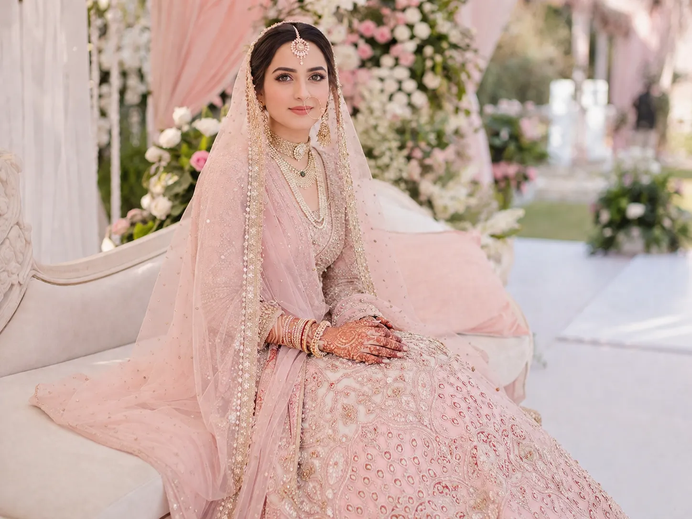
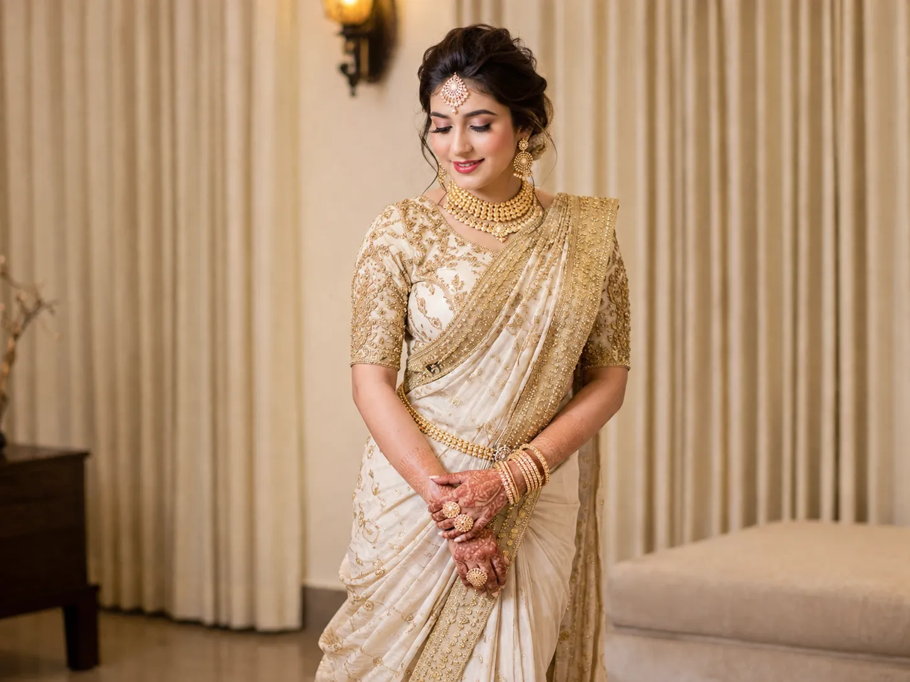
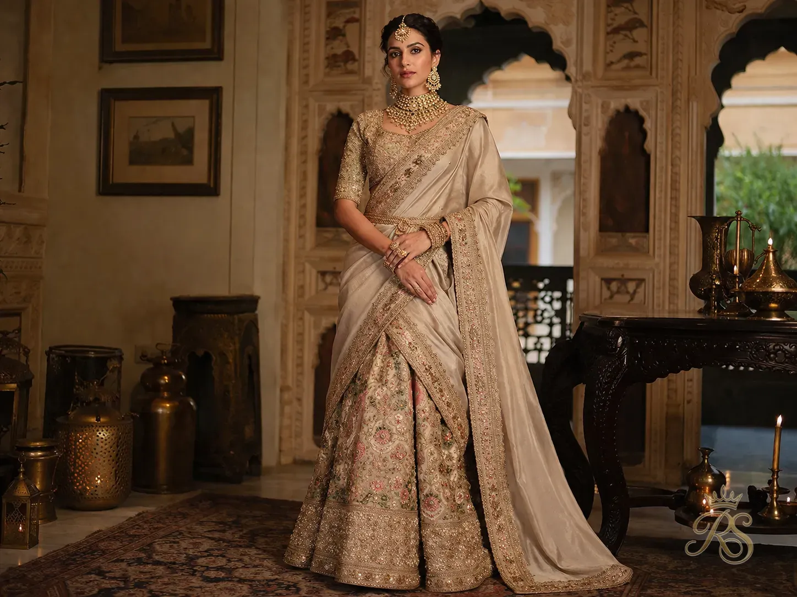

It is the question every Indian bride asks at least once — often in a fitting room, surrounded by cascading silks, her mother on one side and her best friend on the other, each firmly convinced of the answer. Saree or lehenga? Both are magnificent. Both are steeped in tradition. And both can be deeply, personally wrong if worn for the wrong reasons. This guide settles the debate — not with a single winner, but with the nuance and clarity your decision actually deserves.
01
The Heritage Argument: Which Came First?
History & Cultural Roots

The Kanjivaram silk saree — draped in red and gold — has defined South Indian bridal identity for over a thousand years.
Heritage
Saree History
Lehenga Origins
Indian Tradition
The saree is one of the oldest continuously worn garments in human history. Woven references to draped fabric appear in the Vedic texts and Indus Valley seals dating back over 5,000 years. It is not a garment of any single community — every region of India has claimed and transformed the saree into something entirely its own: the Kanjivaram of Tamil Nadu, the Paithani of Maharashtra, the Banarasi of Uttar Pradesh, the Jamdani of Bengal, the Bandhani of Rajasthan. For brides in these communities, wearing their regional saree is not a fashion decision. It is an act of cultural continuity.
The lehenga choli, by contrast, is a relative newcomer — its roots lie in the royal courts of Rajputana and Mughal-era North India. Originally worn by the women of noble and royal households, the lehenga was a garment that announced privilege: its heavy embroidery, multiple metres of fabric, and elaborate choli required considerable wealth to commission. Over the 20th century, as Bollywood glamourised the lehenga and designers like Manish Malhotra and Tarun Tahiliani elevated it into high fashion, it spread from royal households to become the dominant bridal choice across North India and then, via the diaspora, across the world.
"The saree wraps a bride in five thousand years of civilisation. The lehenga crowns her in the grandeur of Mughal courts. Both are inheritance — just of different kingdoms."
Neither garment is more "authentically Indian" than the other. What matters is the inheritance you are choosing to honour. A Tamil bride wearing her grandmother's Kanjivaram is as rooted in her heritage as a Rajasthani bride wearing the traditional ghagra choli of her own ancestral tradition. The question for today's bride is simply: which heritage feels most like home?
🧵
Heritage Tip: If your family has a puja saree — a silk saree that has been worn by your mother, your grandmother, or even great-grandmother at their wedding — strongly consider incorporating it into your ceremony, even if only as a dupatta or as the fabric for your wedding blouse. This kind of heirloom continuity is irreplaceable.
02
The Regional Divide: What Your Community Wears
Regional Traditions Across India


India does not have one bridal tradition — it has hundreds. And a large part of the saree-vs-lehenga answer is already written by geography and community. Understanding where your own traditions sit is the most important first step.
| Region / Community |
Traditional Bridal Outfit |
Signature Fabric / Style |
| Tamil Nadu & Kerala |
Saree (Nivi drape or Madisar) |
Kanjivaram silk, Kasavu saree in off-white and gold |
| Bengal |
Saree (Atpoure drape) |
Banarasi or Benarasi silk in red with white border |
| Maharashtra |
Nauvari Saree (9-yard drape) |
Paithani silk with peacock motifs and zari border |
| Punjab & Delhi |
Lehenga Choli |
Heavy embroidered velvet or silk, red and gold |
| Rajasthan & Gujarat |
Ghagra Choli / Lehenga |
Bandhani, mirror work, vibrant red, orange, and pink |
| Hyderabad / Telangana |
Saree (Gadwal, Pochampally silk) |
Rich silk with Ikat weave and heavy gold zari |
| UP & Bihar |
Lehenga or Banarasi Saree |
Banarasi brocade in red, pink, or maroon |
| Kashmiri |
Phiran / Lehenga hybrid |
Pashmina-inspired embroidery, rich jewel tones |
| Indian Diaspora |
Lehenga (globally popular) |
Designer Indo-Western or classic heavily embroidered lehenga |
If your wedding follows a specific regional ceremony — a Tamil Hindu wedding, a Bengali Lokkhi-puja rituals, or a Punjabi Anand Karaj — the ritual itself may dictate certain clothing choices. Some ceremonies require specific drape styles or fabric types for rituals like the Saptapadi (seven steps) or Sindoor ceremony. If in doubt, speak with your pandit or family elder about whether your outfit choice will accommodate the rituals comfortably.
📍
Regional Tip: If you are marrying across regional traditions — say, a Tamil bride and a Punjabi groom — consider wearing your own regional outfit for the traditional ceremony and a shared aesthetic for the reception. This is becoming increasingly common at cross-cultural Indian weddings in 2026.
03
The Comfort Reality: What It Feels Like to Wear Both
Practical Bridal Experience
5.5m
Average fabric length in a bridal saree drape
3–5 kg
Weight of a heavy embroidered bridal lehenga skirt
16+ hrs
Average duration a bride wears her outfit on the wedding day
Nobody tells you this at the boutique: you will be wearing your bridal outfit for a very long time. From pre-ceremony getting-ready moments through the rituals, the pheras, the baraat entry, the photographs, the reception, and the vidaai — twelve to eighteen hours is not unusual. Comfort is not a secondary concern. It is the foundation of how you feel, move, and remember your wedding day.
The saree, when draped well by an experienced person and secured with good safety pins or stitching, is remarkably freeing in its upper body. The blouse fits your exact body. There is no heavy waistband digging into you. The pallu can be adjusted, re-pinned, or even held by a trusted friend during the pheras. However, the drape does require that you walk carefully — particularly on uneven surfaces or outdoor lawns — and that you are comfortable managing the fabric. Brides who have grown up wearing sarees on festivals and weddings will adapt instinctively; those who rarely drape one may find it anxiety-inducing on a day when anxiety is already present.

The lehenga's structured silhouette photographs beautifully — but its weight and waistband need to be factored into your full-day comfort plan.
The lehenga offers a different comfort proposition. The choli (blouse) is fitted and stationary. The skirt stays exactly where it is draped — no re-pinning mid-ceremony, no worrying about the pallu slipping off your shoulder at the wrong moment. For brides who want to dance freely at the sangeet or reception, the lehenga — particularly one with a well-structured petticoat beneath — allows far more movement confidence. The challenge is weight. A heavily embroidered bridal lehenga skirt can weigh between three and five kilograms, and wearing that on your waist for twelve-plus hours will be felt by the end of the evening. Ask your designer to line the petticoat with cushioning and ensure the waistband is built to be comfortable, not just beautiful.
"The bride who feels comfortable is the bride who looks radiant. Choose the outfit that lets you be present — not the one that makes you manage it all day."
👗
Comfort Tip: Request a full dress rehearsal — not just a fitting — at least a week before your wedding. Wear your entire outfit, jewellery, and footwear for two to three hours at home. Walk up and down stairs. Sit on a low chair. Dance a little. You will immediately identify what needs adjusting before the actual day.
04
The Photography Lens: Which Looks Better in Pictures?
Visual & Aesthetic Impact


Ask any professional Indian wedding photographer which outfit photographs better, and the honest answer is: both, in different ways. The saree is a photographer's dream for intimate, emotional portraits — the fabric catches light beautifully, the drape creates elegant lines, and the blouse-back detail makes for stunning candid shots. The flowing pallu creates movement in photographs that no other garment replicates. In outdoor settings, particularly at golden hour or in natural gardens, a silk saree with its natural lustre photographs with a warmth and grace that is very hard to match.
The lehenga, on the other hand, is engineered for visual spectacle. The full skirt spread on a staircase, a rooftop, or at the phera stage creates the iconic, show-stopping bridal photograph. The structured silhouette reads as regal from any angle. The lehenga also enables the increasingly popular "spinning photograph" and "flat lay" shots — aerial photographs where the bride lies in the centre of her fanned-out skirt, which have become one of the defining bridal images of this decade. For destination weddings with architectural backdrops — palaces, heritage havelis, cliff-side resorts — the lehenga's structured volume creates visual impact that fills the frame magnificently.
📸
Photography Tip: Share your final outfit with your photographer before the wedding day so they can plan shot lists accordingly. A lehenga-specific session might include a spinning sequence and an aerial flat-lay. A saree session might prioritise backlit pallu shots and blouse-back detail portraits. The best photographs are always planned, not accidental.
05
The Budget Equation: What You're Actually Paying For
Cost & Value Comparison
| Category |
Bridal Saree |
Bridal Lehenga |
| Entry Level (ready-to-wear) |
₹8,000 – ₹25,000 |
₹15,000 – ₹40,000 |
| Mid-Range (boutique / regional) |
₹30,000 – ₹1.2 lakh |
₹50,000 – ₹2.5 lakh |
| Premium Designer |
₹1.5 lakh – ₹8 lakh |
₹2 lakh – ₹25 lakh |
| Couture / Custom Made |
₹5 lakh – ₹40 lakh+ |
₹10 lakh – ₹80 lakh+ |
| Alterations Required |
Blouse tailoring only (₹2,000–₹15,000) |
Extensive — skirt hem, choli fitting, fall lining |
| Re-wearability |
Very high — worn at future events or passed on |
Low — rarely re-worn due to bridal styling |
| Heirloom Potential |
Excellent — folds flat, preserves well |
Difficult — requires professional storage |
The saree has a significant practical advantage: it can be worn again. A beautiful Banarasi or Kanjivaram saree that you wear on your wedding day is also the saree you can wear on your first anniversary, at family weddings, at puja ceremonies, and eventually pass to a daughter or daughter-in-law. The garment depreciates in cost far more slowly than a lehenga, which is — in honest terms — a single-occasion outfit. Many brides choose to rent or borrow designer lehengas specifically for this reason: the cost-per-wear mathematics are difficult to justify on a ₹5 lakh garment worn once.
There is also a hidden cost to lehengas that catalogues do not show: the alterations. A lehenga that fits perfectly in the boutique will need a skilled tailor to adjust the skirt hem to your exact ankle height, the choli to fit your exact measurements, and the dupatta to behave as it should during the ceremony. Budget a minimum of ₹5,000–₹20,000 for quality alterations, and ensure they are completed at least three weeks before the wedding so adjustments can be made if needed.
💰
Budget Tip: Consider renting a designer lehenga and investing the saving into your bridal saree — a garment you will actually wear for the rest of your life. Several premium rental platforms in Mumbai, Delhi, and Bengaluru now offer Sabyasachi, Manish Malhotra, and Falguni Shane Peacock bridal lehengas at 15–25% of retail price.
06
The 2026 Trend Report: What Brides Are Actually Choosing
Current Bridal Fashion Landscape



Left to right: The pastel lehenga wave, the modern draped saree revival, and the hybrid saree-lehenga silhouette dominating 2026 bridal lookbooks.
In 2026, the conversation is no longer binary. Three distinct movements are shaping Indian bridal fashion simultaneously, and the most interesting brides are refusing to be contained by either category.
The pastel lehenga wave continues to dominate — dusty rose, powder lavender, sage green, and champagne ivory lehengas have overtaken red as the leading choice at North Indian weddings. Designers report that over 60% of premium bridal lehenga orders are now in non-traditional colours, with red and maroon declining to under 30% for the first time in recorded fashion history. This shift reflects a broader desire for individuality: the modern Indian bride wants to look like herself at her wedding, not like a generic bridal fantasy.
The saree revival is real and growing — particularly among brides aged 28–35 who consciously want to reconnect with heritage and move away from the Bollywood-bride aesthetic. Pre-draped sarees with structured underskirts have made the saree significantly more accessible — the garment stays in place throughout the day without needing re-pinning, solving the biggest practical anxiety. Labels like Anavila, Gaurang Shah, and Raw Mango are seeing surging demand for their handloom bridal sarees.
The hybrid — a saree-inspired lehenga, or a lehenga with a pallu-style dupatta draped as a saree — is the most experimental option, and it is gaining real traction. Brides who want the security of a lehenga with the aesthetic of a saree are increasingly commissioning custom pieces that blend both silhouettes. These pieces photograph extraordinarily well and sidestep the binary entirely.
"In 2026, the most fashionable choice is the one that is most deliberately yours — not the one trending on Instagram."
✨
2026 Tip: Do not make your outfit decision based solely on wedding Instagram or Pinterest boards. Those images show the outfits that photograph best under studio conditions. Visit at least two designers in person, try both options on your actual body, and pay attention to how you feel — not just how you look — in the mirror.
07
The Final Verdict: A Decision Framework
Choosing What's Right For You
Choose a Saree If…
The Saree Bride
- Your wedding follows South Indian, Bengali, or Maharashtrian traditions
- You want to wear a family heirloom or pass it on one day
- You are comfortable draping and managing a saree
- You prefer intimate, graceful photographs over dramatic volume
- Your venue features outdoor lawns, natural light, or a heritage aesthetic
- Re-wearability and long-term value matter to you
- You want to honour regional handloom and weaving traditions
Choose a Lehenga If…
The Lehenga Bride
- You're having a North Indian wedding with Punjabi or Rajasthani ceremony traditions
- You want the full, dramatic volume that photographs as bridal royalty
- You plan to dance extensively at the sangeet or reception
- Your venue is a grand palace, ballroom, or luxury hotel
- You love a heavily embellished, couture-level garment
- A single spectacular moment matters more than re-wearability
- You want total colour freedom, including pastels, non-traditional hues
And if you are still torn: wear both. Many modern Indian brides wear a traditional saree for the morning ceremony and change into a lehenga for the evening reception. Others wear a lehenga for their North Indian wedding and a saree for the South Indian ceremony, if marrying across communities. The decision does not have to be singular — your wedding is likely a multi-event affair, and each occasion deserves its own considered outfit story.
The only genuinely wrong answer is wearing something because someone else told you to, wearing something purely for social media, or wearing something that makes you anxious all day. Your bridal outfit should be the quietest possible version of confidence — a garment that makes you feel so completely like yourself that you forget you are wearing it at all.
💡
Final Tip: Before you finalise your bridal outfit, write down three words that describe how you want to feel on your wedding day — not how you want to look. Then hold every outfit option up to those three words. The one that fits best is your answer, regardless of what it is.
Find Your Perfect Bridal Designer
Browse verified bridal boutiques, lehenga designers, and saree specialists across India on Royal Shaadi.
Explore Bridal Vendors →